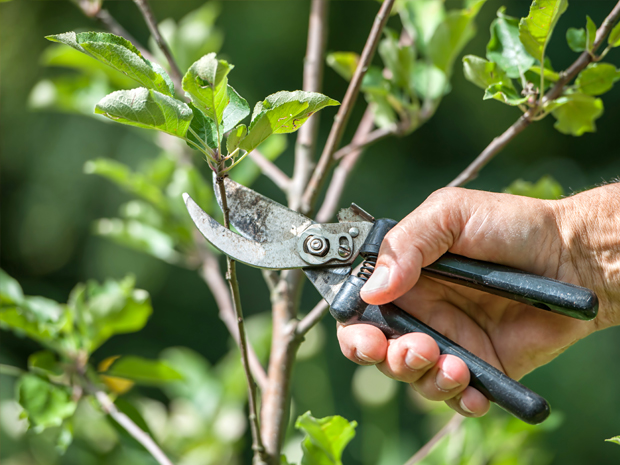

Inicio▸ Consejos para principiantes
Las podas son uno de los procesos más importantes de las plantas.
Las plantas al igual que cualquier otro ser vivo necesitan salud, y una buena poda le podría proporcionar esto.
El proceso de poda consiste en cortar brotes y ramas que vemos que sobran.
Esto tiene el fin de por ejemplo orientar el crecimiento de la planta, cosa que nos ayudaría mucho a la hora de aprovechar nuestro espacio.
Retirar las ramas sobrantes permitirán a la planta una mayor exposición hacia el sol.

La mayoría de las podas se suelen efectuar en invierno ya que es el período donde la mayoría de estas aún no han florecido.
Una poda drástica sobre nuestra planta puede acabar con su siguiente proceso de florecido o incluso puede que nos la carguemos.
Por ello, antes de efectuar ninguna poda es mejor asesorarnos bien.
Primero que nada debemos conocer y establecer el fin de nuestro jardín. Podremos plantar diferentes tipos de flores o cultivar hortalizas, por ejemplo. Por ello es muy importante que definamos el fin de este y establecer un espacio mayor o menor en función de lo que sea necesario para ellas. Unas cuantas plantas fáciles de cultivar para iniciarnos en la jardinería pueden ser las rosas, las margaritas o los geránios. Debemos ubicarlas en espacios luminosos y limpiar bien la tierra donde las cultivaremos. Otras opciones viables para comenzar puede ser el cultivo de la hierbabuena, el perejil o la manzanilla.
Uno de los detalles más importantes a tener en cuenta al iniciarse en el tema de la jardinería es evaluar el clima en el que nos encontramos. Dependiendo de si habitamos una zona más calurosa o más fría podremos plantar unas cosas u otras. Por otro lado también tendremos que tener en cuenta el terreno en el que queremos trabajar. Existen plantas que requieren de un terreno más húmedo, como por ejemplo los helechos o la cala. Sin embargo, también podremos encontrar otro tipo de plantas que no necesitan un terreno húmedo, sino uno más drenado, más seco, como es el caso de los cactus.
Estas son las tres fases por las que pasaremos en cualquier jardín con la mayoría de las plantas que tengamos.
Previamente a sembrar la semilla de nuestra futura planta, necesitamos tener suficiente información acerca de ella.
Lo principal es saber que tipo de planta vamos a plantar y en que momento del año se tiene que sembrar dicha planta.
Una vez que sabemos cuando debemos plantar nuestra semilla, debemos preparar el terreno donde queremos que esta crezca.
Debemos controlar mucho la humedad que tenga el terreno donde se encuentra.
También nos podemos encontrar con el caso de que la tierra no tenga demasiada buena pinta, por lo que siempre podemos optar por aplicar humus.
Algo muy importante también es que retiramos cualquier impedimento para el crecimiento de nuestra planta.
A la hora de sembrar nuestra semilla debemos tener en cuenta la distancia a la que debe encontrarse en referencia a las demás que queremos plantar o que ya
tenemos plantadas. Dos plantas demasiado cercanas pueden entorpecerse en su crecimiento y que ninguna de las dos acabe prosperando.
Cuando hablamos de fertilización estamos refiriendonos a una de las fases más importantes del crecimiento de nuestra planta.
os permite concretamente enriquecer a nuestra planta de un mejor estado en el terreno.
Esto podríamos conseguirlo con métodos como la aplicación de compost.
Sin embargo, uno de los principales errores que podemos cometer es fertilizar las plantas recién plantadas.
Una vez empiecen a crecer y se les vea estables si que las podemos ayudar en esta etapa de crecimiento con la aplicación de un fertilizante.